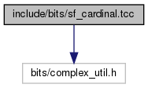
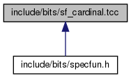

sf_cardinal.tcc File Reference
#include <bits/complex_util.h>
Include dependency graph for sf_cardinal.tcc:

This graph shows which files directly or indirectly include this file:

Go to the source code of this file.
Namespaces | |
| std | |
| std::__detail | |
| Implementation-space details. | |
Macros | |
| #define | _GLIBCXX_BITS_SF_CARDINAL_TCC 1 |
Functions | |
| template<typename _Tp > | |
| __gnu_cxx::fp_promote_t< _Tp > | std::__detail::__sinc (_Tp __x) |
| Return the sinus cardinal function
. More... | |
| template<typename _Tp > | |
| __gnu_cxx::fp_promote_t< _Tp > | std::__detail::__sinc_pi (_Tp __x) |
| Return the reperiodized sinus cardinal function
. More... | |
| template<typename _Tp > | |
| __gnu_cxx::fp_promote_t< _Tp > | std::__detail::__sinhc (_Tp __x) |
| Return the hyperbolic sinus cardinal function
. More... | |
| template<typename _Tp > | |
| __gnu_cxx::fp_promote_t< _Tp > | std::__detail::__sinhc_pi (_Tp __x) |
| Return the reperiodized hyperbolic sinus cardinal function
. More... | |
![\[ sinc(x) = \frac{\sin(x)}{x} \]](form_471.png)
![\[ sinc_\pi(x) = \frac{\sin(\pi x)}{\pi x} \]](form_472.png)
![\[ sinhc(x) = \frac{\sinh(x)}{x} \]](form_473.png)
![\[ sinhc_\pi(x) = \frac{\sinh(\pi x)}{\pi x} \]](form_474.png)
Macro Definition Documentation
◆ _GLIBCXX_BITS_SF_CARDINAL_TCC
| #define _GLIBCXX_BITS_SF_CARDINAL_TCC 1 |
Definition at line 31 of file sf_cardinal.tcc.